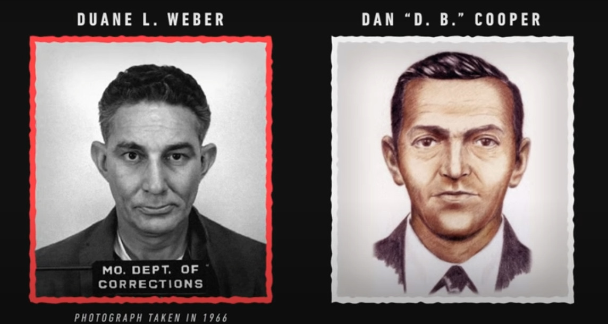

D.B. Cooper, also known as Dan Cooper, is the alias of the man notorious for committing not only one of the greatest mysteries in the history of aviation and criminal investigations in the United States,
but possibly the world. On this website, we'll look at what happened, the investigation, and the legacy left behind from the incident that took place over 50 years ago...

Described as being in his mid-40s and wearing a dark suit, a tie, and a raincoat, a man purchased a ticket under the name Dan Cooper and boarded Northwest Orient Airlines Flight 305, a Boeing 727. The ticket was for a single flight from Portland, Oregon to Seattle, Washington. The people on the plane included 36 passengers and 6 crew members. Cooper sat in the last row of the plane in the middle seat on the right side of the cabin. As Flight 305 departed, he ordered a drink, smoked a cigarette, then handed an envelope with a note to a flight attendant, which read:
"I have a bomb here and I would like you to sit by me."
When the flight attendant sat next to Cooper, he opened his briefcase to show her 8 sticks of dynamite hidden inside of it. He than proceed to give her his lists of demands, which included:
The first flight attendant went to alert the pilots of what was going on while a second attendant sat next to Cooper with the telephone in the rear cabin to act as an intermediary between the pilots, crew members, and Cooper. Flight 305 circled around Seattle-Tacoma Airport for over 90 minutes while local and federal authorities gathered the ransom money and parachutes he requested as quickly as possible. Once his demands were gathered, the plane finally landed on the tarmac at 5:45 pm. While one of the flight attendants gathered the money and parachutes, Cooper allowed the passengers and 2 of the flight attendants to unboard. With the remaining 4 crew members, Cooper instructed the pilots to fly to Mexico City with certain parameters in place. The parameters were that:
After consideration from the pilots, they agreed that the journey to Mexico City would not be possible given the previous parameters, so Cooper agreed to a refueling in Reno, Nevada. As well, the aft stairway could not stay open through the entriety of the trip, so he reluctantly agreed to be taught to open it so he could do so at his choosing. After complications with refueling the plane, it departed from Seattle-Tacoma Ariport at around 7:36 pm. Once the plane was in the air, Cooper instructed the remaining flight attendant to secure herself in the cockpit with the 2 pilots and the other crew member. He was last seen standing in the middle of the aisles, as if he was preparing to jump. When flight 305 landed in Reno 3 hours later, Cooper was nowhere to be found onboard, and the opened aft stairway had been damaged upon landing. The only possible explanation was that at some point between Seattle and Reno, Cooper jumped from the Boeing 727 into the cold, pitch black abyss.

When the crew realized they were the only ones left aboard, FBI agents quickly swarmed the plane to begin looking for evidence to find out who exactly "Dan Cooper" was. However, FBI agents quickly came to realize that there was hardly any evidence. The small amount of evidence that was found on the plane amounted to:
As well, this was the description of Cooper that was given to the FBI by the flight crew that had seen him.
The next big hurdle for the FBI to cross was that neither the crew members or the 2 fighter jets that were escorting Flight 305 had seen him jump due to the dark conditions of the night. This meant that he could be just about anywhere between Seattle and Reno. The only clue was the last communication Cooper had with the copilot at approximately 8:05pm, followed by an oscillation.
Also, because of the complications with refueling Cooper seemingly grew impatient and didn't specify a flight path, meaning the pilot chose a specific airway known as Victor 23, which gave the FBI and local authorities a better idea of the rough area in which he could have been in given the time of the things mentioned previously. They speculated that Cooper had likely jumped about 25 miles north of Portland, Oregon. By the morning of November 25th, a wide radius of the search area was flooded with local and federal agents, including ground patrol, helicopters, and airplanes. However, it was still quite difficult to pinpoint an exact location of his landing due to the environment of the area, which was covered by an extremely dense forest in a mountainous region. The weather also proved to be difficult to search in due to low temperatures, rain, and snow. Cooper, along with any bit of evidence, would elude authorities for nearly a decade until a scrap of evidence was finally found.
In 1980, a young boy was building a campfire on a sand bar by a river and discovered 3 bundles of cash while digging into the sand, totalling to an amount of $5,880. When the ransom money was given to Cooper, it came from a bank in Seattle that had a ransom package for events such as the one that occured in 1971, and the serial numbers on the bills were documented. Though the bills were severely degraded, analysts discovered that the bundles found by the boy had serial numbers that matched some of the bills taken by Cooper.
While there was finally a shred of evidence, this only confused investigators further because with the way the river flows, there was no way the bills could have ended up there given the parameters of the initial search radius. Had the search radius been miscalculated? Was the determined flight path of Flight 305 off by a few degrees? How could 3 bundles of cash wash up in the exact same spot? Weirdest of all, the rubber bands on the bundles were still intact, which didn't make sense because those types of rubber bands could only survive the elements of open air and water for about a year. This led investigators to believe that someone, perhaps even Cooper himself, had buried the money deliberately after the hijacking.

A lot of people think he probably fucking exploded died on impact when hitting the ground due to his jumping conditions and the extreme environment below. When he is believed to have jumped, Flight 305 was going through
freezing rain at about 170 knots at an altitude of 10,000 feet above southern Washington. Not only was Cooper under-dressed for the jump, but cloud cover would have made it impossible for him to determine exactly where or what he was
jumping into. He also was using a parachute that couldn't be steered, so even if he had a spot in mind with perfect conditions it would be extremely hard to hit. If you recall, there were 4 parachutes demanded in the ransom.
2 of those parachutes were primary chutes, 1 was a reserve chute, and 1 was a dummy chute intended for training purposes. The two parachutes that were left on the plane were one of the primary chutes and the reserve chute.
This means that he took one primary chute and the dummy chute. It's speculated that he took the dummy chute to stuff the $200,000 in to make it easier to carry for the descent and after landing. To this day, whether he lived or died
that night continues to be a mystery. However, that has not stopped authorities from sniffing out potential suspects.
One of the first people to be a suspect was a man that lived in Portland that had the initials D.B. with the last name Cooper. In fact, due to confusion by the press, this is why we know the man as D.B. Cooper, even though there's no indication that the man who hijacked Flight 305 ever went by the initials "D.B.". In the past 50 years, there have been hundreds of people that have either been suspected or "confessed" to being Dan Cooper. Though most people either don't fit the description given by the crew members that saw him or don't show the clear knowledge/modus operandi, there is 1 person in particular that stands out to me.
Duane Weber died in 1995 and on his deathbed confessed to his wife that he was Dan Cooper. She didn't think anything of it at the time, but months later pieced together what he meant after researching the name. The evidence that made her believe her late husbands claims were that:
However, there is evidence against the fact that he was Dan Cooper. None of the fingerprints found in the plane matched his, nor did any of the DNA samples recovered from the tie.
The enigma surrounding D.B. Cooper persists as one of the most enduring mysteries in criminal history. Despite the FBI formally closing its investigation in 2016, the elusive hijacker's identity and fate remain unknown. The legend of D.B. Cooper has transcended the confines of a mere unsolved case, captivating the public's imagination and inspiring a wealth of books, documentaries, and movies. The ongoing intrigue surrounding Cooper's disappearance ensures that this airborne heist continues to hold a unique and mystifying place in American folklore. If you would like to watch a more detailed video regarding DB Cooper, I would recommend checking this out!